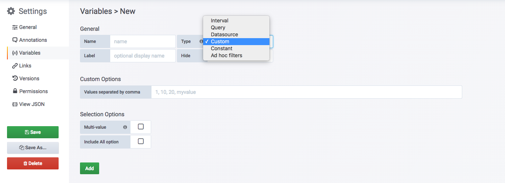
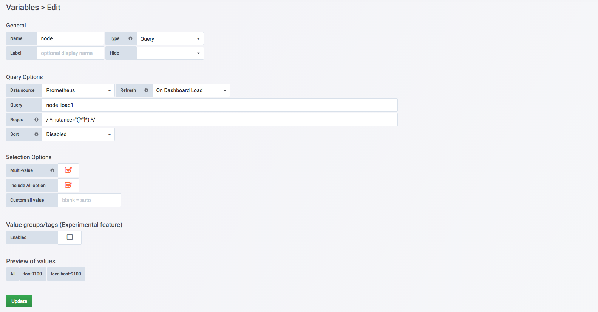
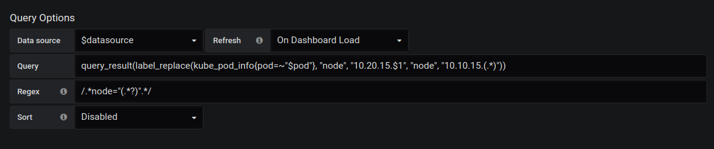
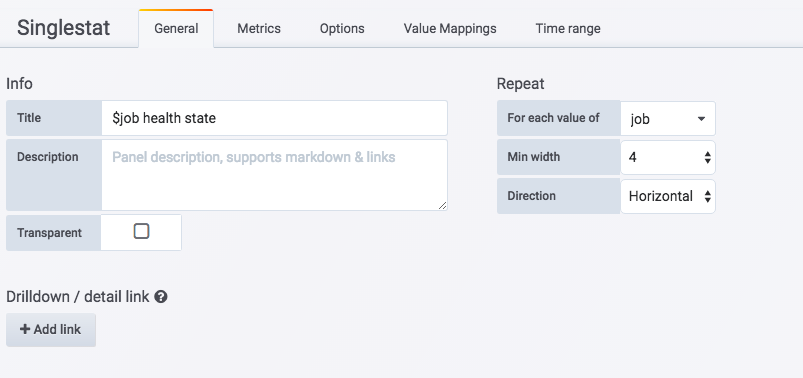
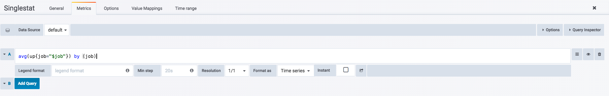
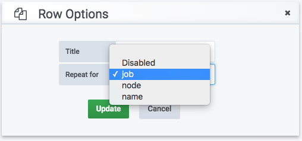

<!DOCTYPE HTML>
<html lang="" >
    <head>
        <meta charset="UTF-8">
        <meta content="text/html; charset=utf-8" http-equiv="Content-Type">
        <title>模板化Dashboard · GitBook</title>
        <meta http-equiv="X-UA-Compatible" content="IE=edge" />
        <meta name="description" content="">
        <meta name="generator" content="GitBook 3.2.3">
        
        
        
    
    <link rel="stylesheet" href="../gitbook/style.css">

    
            
                
                <link rel="stylesheet" href="../gitbook/gitbook-plugin-highlight/website.css">
                
            
                
                <link rel="stylesheet" href="../gitbook/gitbook-plugin-search/search.css">
                
            
                
                <link rel="stylesheet" href="../gitbook/gitbook-plugin-fontsettings/website.css">
                
            
        

    

    
        
    
        
    
        
    
        
    
        
    
        
    

        
    
    
    <meta name="HandheldFriendly" content="true"/>
    <meta name="viewport" content="width=device-width, initial-scale=1, user-scalable=no">
    <meta name="apple-mobile-web-app-capable" content="yes">
    <meta name="apple-mobile-web-app-status-bar-style" content="black">
    <link rel="apple-touch-icon-precomposed" sizes="152x152" href="../gitbook/images/apple-touch-icon-precomposed-152.png">
    <link rel="shortcut icon" href="../gitbook/images/favicon.ico" type="image/x-icon">

    
    <link rel="next" href="SUMMARY.html" />
    
    
    <link rel="prev" href="use_singlestat_panel.html" />
    

    </head>
    <body>
        
<div class="book">
    <div class="book-summary">
        
            
<div id="book-search-input" role="search">
    <input type="text" placeholder="Type to search" />
</div>

            
                <nav role="navigation">
                


<ul class="summary">
    
    

    

    
        
        
    
        <li class="chapter " data-level="1.1" data-path="../">
            
                <a href="../">
            
                    
                    Introduction
            
                </a>
            

            
        </li>
    
        <li class="chapter " data-level="1.2" data-path="../Introduction.html">
            
                <a href="../Introduction.html">
            
                    
                    简介
            
                </a>
            

            
        </li>
    

    
        
        <li class="header">Part I - Prometheus基础</li>
        
        
    
        <li class="chapter " data-level="2.1" data-path="../quickstart/">
            
                <a href="../quickstart/">
            
                    
                    第1章 介绍
            
                </a>
            

            
            <ul class="articles">
                
    
        <li class="chapter " data-level="2.1.1" data-path="../quickstart/why-monitor.html">
            
                <a href="../quickstart/why-monitor.html">
            
                    
                    Prometheus简介
            
                </a>
            

            
        </li>
    
        <li class="chapter " data-level="2.1.2" data-path="../quickstart/prometheus-quick-start.html">
            
                <a href="../quickstart/prometheus-quick-start.html">
            
                    
                    初识Prometheus
            
                </a>
            

            
            <ul class="articles">
                
    
        <li class="chapter " data-level="2.1.2.1" data-path="../quickstart/install-prometheus-server.html">
            
                <a href="../quickstart/install-prometheus-server.html">
            
                    
                    安装Prometheus Server
            
                </a>
            

            
        </li>
    
        <li class="chapter " data-level="2.1.2.2" data-path="../quickstart/use-node-exporter.html">
            
                <a href="../quickstart/use-node-exporter.html">
            
                    
                    使用Node Exporter采集主机数据
            
                </a>
            

            
        </li>
    
        <li class="chapter " data-level="2.1.2.3" data-path="../quickstart/promql_quickstart.html">
            
                <a href="../quickstart/promql_quickstart.html">
            
                    
                    使用PromQL查询监控数据
            
                </a>
            

            
        </li>
    
        <li class="chapter " data-level="2.1.2.4" data-path="../quickstart/use-grafana-create-dashboard.html">
            
                <a href="../quickstart/use-grafana-create-dashboard.html">
            
                    
                    监控数据可视化
            
                </a>
            

            
        </li>
    

            </ul>
            
        </li>
    
        <li class="chapter " data-level="2.1.3" data-path="../quickstart/prometheus-job-and-instance.html">
            
                <a href="../quickstart/prometheus-job-and-instance.html">
            
                    
                    任务和实例
            
                </a>
            

            
        </li>
    
        <li class="chapter " data-level="2.1.4" data-path="../quickstart/prometheus-arch.html">
            
                <a href="../quickstart/prometheus-arch.html">
            
                    
                    Prometheus核心组件
            
                </a>
            

            
        </li>
    
        <li class="chapter " data-level="2.1.5" data-path="../quickstart/SUMMARY.html">
            
                <a href="../quickstart/SUMMARY.html">
            
                    
                    小结
            
                </a>
            

            
        </li>
    

            </ul>
            
        </li>
    
        <li class="chapter " data-level="2.2" data-path="../promql/">
            
                <a href="../promql/">
            
                    
                    第2章 探索PromQL
            
                </a>
            

            
            <ul class="articles">
                
    
        <li class="chapter " data-level="2.2.1" data-path="../promql/what-is-prometheus-metrics-and-labels.html">
            
                <a href="../promql/what-is-prometheus-metrics-and-labels.html">
            
                    
                    理解时间序列
            
                </a>
            

            
        </li>
    
        <li class="chapter " data-level="2.2.2" data-path="../promql/prometheus-metrics-types.html">
            
                <a href="../promql/prometheus-metrics-types.html">
            
                    
                    Metrics类型
            
                </a>
            

            
        </li>
    
        <li class="chapter " data-level="2.2.3" data-path="../promql/prometheus-query-language.html">
            
                <a href="../promql/prometheus-query-language.html">
            
                    
                    初识PromQL
            
                </a>
            

            
        </li>
    
        <li class="chapter " data-level="2.2.4" data-path="../promql/prometheus-promql-operators-v2.html">
            
                <a href="../promql/prometheus-promql-operators-v2.html">
            
                    
                    PromQL操作符
            
                </a>
            

            
        </li>
    
        <li class="chapter " data-level="2.2.5" data-path="../promql/prometheus-aggr-ops.html">
            
                <a href="../promql/prometheus-aggr-ops.html">
            
                    
                    PromQL聚合操作
            
                </a>
            

            
        </li>
    
        <li class="chapter " data-level="2.2.6" data-path="../promql/prometheus-promql-functions.html">
            
                <a href="../promql/prometheus-promql-functions.html">
            
                    
                    PromQL内置函数
            
                </a>
            

            
        </li>
    
        <li class="chapter " data-level="2.2.7" data-path="../promql/prometheus-promql-with-http-api.html">
            
                <a href="../promql/prometheus-promql-with-http-api.html">
            
                    
                    在HTTP API中使用PromQL
            
                </a>
            

            
        </li>
    
        <li class="chapter " data-level="2.2.8" data-path="../promql/prometheus-promql-best-praticase.html">
            
                <a href="../promql/prometheus-promql-best-praticase.html">
            
                    
                    最佳实践：4个黄金指标和USE方法
            
                </a>
            

            
        </li>
    
        <li class="chapter " data-level="2.2.9" data-path="../promql/SUMMARY.html">
            
                <a href="../promql/SUMMARY.html">
            
                    
                    小结
            
                </a>
            

            
        </li>
    

            </ul>
            
        </li>
    
        <li class="chapter " data-level="2.3" data-path="../alert/">
            
                <a href="../alert/">
            
                    
                    第3章 Prometheus告警处理
            
                </a>
            

            
            <ul class="articles">
                
    
        <li class="chapter " data-level="2.3.1" data-path="../alert/prometheus-alert-manager-overview.html">
            
                <a href="../alert/prometheus-alert-manager-overview.html">
            
                    
                    Prometheus告警简介
            
                </a>
            

            
        </li>
    
        <li class="chapter " data-level="2.3.2" data-path="../alert/prometheus-alert-rule.html">
            
                <a href="../alert/prometheus-alert-rule.html">
            
                    
                    自定义Prometheus告警规则
            
                </a>
            

            
        </li>
    
        <li class="chapter " data-level="2.3.3" data-path="../alert/install-alert-manager.html">
            
                <a href="../alert/install-alert-manager.html">
            
                    
                    部署AlertManager
            
                </a>
            

            
        </li>
    
        <li class="chapter " data-level="2.3.4" data-path="../alert/alert-manager-config.html">
            
                <a href="../alert/alert-manager-config.html">
            
                    
                    Alertmanager配置概述
            
                </a>
            

            
        </li>
    
        <li class="chapter " data-level="2.3.5" data-path="../alert/alert-manager-route.html">
            
                <a href="../alert/alert-manager-route.html">
            
                    
                    基于标签的告警处理路由
            
                </a>
            

            
        </li>
    
        <li class="chapter " data-level="2.3.6" data-path="../alert/alert-manager-use-receiver.html">
            
                <a href="../alert/alert-manager-use-receiver.html">
            
                    
                    使用Receiver接收告警信息
            
                </a>
            

            
            <ul class="articles">
                
    
        <li class="chapter " data-level="2.3.6.1" data-path="../alert/alert-with-smtp.html">
            
                <a href="../alert/alert-with-smtp.html">
            
                    
                    集成邮件系统
            
                </a>
            

            
        </li>
    
        <li class="chapter " data-level="2.3.6.2" data-path="../alert/alert-with-slack.html">
            
                <a href="../alert/alert-with-slack.html">
            
                    
                    集成Slack
            
                </a>
            

            
        </li>
    
        <li class="chapter " data-level="2.3.6.3" data-path="../alert/alert-with-wechat.html">
            
                <a href="../alert/alert-with-wechat.html">
            
                    
                    集成企业微信
            
                </a>
            

            
        </li>
    
        <li class="chapter " data-level="2.3.6.4" data-path="../alert/alert-manager-extension-with-webhook.html">
            
                <a href="../alert/alert-manager-extension-with-webhook.html">
            
                    
                    集成钉钉：基于Webhook的扩展
            
                </a>
            

            
        </li>
    

            </ul>
            
        </li>
    
        <li class="chapter " data-level="2.3.7" data-path="../alert/alert-template.html">
            
                <a href="../alert/alert-template.html">
            
                    
                    告警模板详解
            
                </a>
            

            
        </li>
    
        <li class="chapter " data-level="2.3.8" data-path="../alert/alert-manager-inhibit.html">
            
                <a href="../alert/alert-manager-inhibit.html">
            
                    
                    屏蔽告警通知
            
                </a>
            

            
        </li>
    
        <li class="chapter " data-level="2.3.9" data-path="../alert/prometheus-recoding-rules.html">
            
                <a href="../alert/prometheus-recoding-rules.html">
            
                    
                    使用Recoding Rules优化性能
            
                </a>
            

            
        </li>
    
        <li class="chapter " data-level="2.3.10" data-path="../alert/SUMMARY.html">
            
                <a href="../alert/SUMMARY.html">
            
                    
                    小结
            
                </a>
            

            
        </li>
    

            </ul>
            
        </li>
    

    
        
        <li class="header">Part II - Prometheus进阶</li>
        
        
    
        <li class="chapter " data-level="3.1" data-path="../exporter/">
            
                <a href="../exporter/">
            
                    
                    第4章 Exporter详解
            
                </a>
            

            
            <ul class="articles">
                
    
        <li class="chapter " data-level="3.1.1" data-path="../exporter/what-is-prometheus-exporter.html">
            
                <a href="../exporter/what-is-prometheus-exporter.html">
            
                    
                    Exporter是什么
            
                </a>
            

            
        </li>
    
        <li class="chapter " data-level="3.1.2" data-path="../exporter/commonly-eporter-usage.html">
            
                <a href="../exporter/commonly-eporter-usage.html">
            
                    
                    常用Exporter
            
                </a>
            

            
            <ul class="articles">
                
    
        <li class="chapter " data-level="3.1.2.1" data-path="../exporter/use-prometheus-monitor-container.html">
            
                <a href="../exporter/use-prometheus-monitor-container.html">
            
                    
                    容器监控：cAdvisor
            
                </a>
            

            
        </li>
    
        <li class="chapter " data-level="3.1.2.2" data-path="../exporter/use-promethues-monitor-mysql.html">
            
                <a href="../exporter/use-promethues-monitor-mysql.html">
            
                    
                    监控MySQL运行状态：MySQLD Exporter
            
                </a>
            

            
        </li>
    
        <li class="chapter " data-level="3.1.2.3" data-path="../exporter/install_blackbox_exporter.html">
            
                <a href="../exporter/install_blackbox_exporter.html">
            
                    
                    网络探测：Blackbox Exporter
            
                </a>
            

            
        </li>
    

            </ul>
            
        </li>
    
        <li class="chapter " data-level="3.1.3" data-path="../exporter/custom_exporter_with_java.html">
            
                <a href="../exporter/custom_exporter_with_java.html">
            
                    
                    使用Java自定义Exporter
            
                </a>
            

            
            <ul class="articles">
                
    
        <li class="chapter " data-level="3.1.3.1" data-path="../exporter/client_library_java.html">
            
                <a href="../exporter/client_library_java.html">
            
                    
                    使用Client Java构建Exporter程序
            
                </a>
            

            
        </li>
    
        <li class="chapter " data-level="3.1.3.2" data-path="../exporter/custom_app_support_prometheus.html">
            
                <a href="../exporter/custom_app_support_prometheus.html">
            
                    
                    在应用中内置Prometheus支持
            
                </a>
            

            
        </li>
    

            </ul>
            
        </li>
    
        <li class="chapter " data-level="3.1.4" data-path="../exporter/SUMMARY.html">
            
                <a href="../exporter/SUMMARY.html">
            
                    
                    小结
            
                </a>
            

            
        </li>
    

            </ul>
            
        </li>
    
        <li class="chapter " data-level="3.2" data-path="./">
            
                <a href="./">
            
                    
                    第5章 数据与可视化
            
                </a>
            

            
            <ul class="articles">
                
    
        <li class="chapter " data-level="3.2.1" data-path="use-console-template.html">
            
                <a href="use-console-template.html">
            
                    
                    使用Console Template
            
                </a>
            

            
        </li>
    
        <li class="chapter " data-level="3.2.2" data-path="grafana-intro.html">
            
                <a href="grafana-intro.html">
            
                    
                    Grafana的基本概念
            
                </a>
            

            
        </li>
    
        <li class="chapter " data-level="3.2.3" data-path="grafana-panels.html">
            
                <a href="grafana-panels.html">
            
                    
                    Grafana与数据可视化
            
                </a>
            

            
            <ul class="articles">
                
    
        <li class="chapter " data-level="3.2.3.1" data-path="use_graph_panel.html">
            
                <a href="use_graph_panel.html">
            
                    
                    变化趋势：Graph面板
            
                </a>
            

            
        </li>
    
        <li class="chapter " data-level="3.2.3.2" data-path="use_heatmap_panel.html">
            
                <a href="use_heatmap_panel.html">
            
                    
                    分布统计：Heatmap面板
            
                </a>
            

            
        </li>
    
        <li class="chapter " data-level="3.2.3.3" data-path="use_singlestat_panel.html">
            
                <a href="use_singlestat_panel.html">
            
                    
                    当前状态：SingleStat面板
            
                </a>
            

            
        </li>
    

            </ul>
            
        </li>
    
        <li class="chapter active" data-level="3.2.4" data-path="templating.html">
            
                <a href="templating.html">
            
                    
                    模板化Dashboard
            
                </a>
            

            
        </li>
    
        <li class="chapter " data-level="3.2.5" data-path="SUMMARY.html">
            
                <a href="SUMMARY.html">
            
                    
                    小结
            
                </a>
            

            
        </li>
    

            </ul>
            
        </li>
    
        <li class="chapter " data-level="3.3" data-path="../ha/READMD.html">
            
                <a href="../ha/READMD.html">
            
                    
                    第6章 集群与高可用
            
                </a>
            

            
            <ul class="articles">
                
    
        <li class="chapter " data-level="3.3.1" data-path="../ha/prometheus-local-storage.html">
            
                <a href="../ha/prometheus-local-storage.html">
            
                    
                    本地存储
            
                </a>
            

            
        </li>
    
        <li class="chapter " data-level="3.3.2" data-path="../ha/prometheus-remote-storage.html">
            
                <a href="../ha/prometheus-remote-storage.html">
            
                    
                    远程存储
            
                </a>
            

            
        </li>
    
        <li class="chapter " data-level="3.3.3" data-path="../ha/scale-prometheus-with-federation.html">
            
                <a href="../ha/scale-prometheus-with-federation.html">
            
                    
                    联邦集群
            
                </a>
            

            
        </li>
    
        <li class="chapter " data-level="3.3.4" data-path="../ha/prometheus-and-high-availability.html">
            
                <a href="../ha/prometheus-and-high-availability.html">
            
                    
                    Prometheus高可用
            
                </a>
            

            
        </li>
    
        <li class="chapter " data-level="3.3.5" data-path="../ha/alertmanager-high-availability.html">
            
                <a href="../ha/alertmanager-high-availability.html">
            
                    
                    Alertmanager高可用
            
                </a>
            

            
        </li>
    
        <li class="chapter " data-level="3.3.6" data-path="../ha/SUMMARY.html">
            
                <a href="../ha/SUMMARY.html">
            
                    
                    小结
            
                </a>
            

            
        </li>
    

            </ul>
            
        </li>
    
        <li class="chapter " data-level="3.4" data-path="../sd/">
            
                <a href="../sd/">
            
                    
                    第7章 Prometheus服务发现
            
                </a>
            

            
            <ul class="articles">
                
    
        <li class="chapter " data-level="3.4.1" data-path="../sd/why-need-service-discovery.html">
            
                <a href="../sd/why-need-service-discovery.html">
            
                    
                    Prometheus与服务发现
            
                </a>
            

            
        </li>
    
        <li class="chapter " data-level="3.4.2" data-path="../sd/service-discovery-with-file.html">
            
                <a href="../sd/service-discovery-with-file.html">
            
                    
                    基于文件的服务发现
            
                </a>
            

            
        </li>
    
        <li class="chapter " data-level="3.4.3" data-path="../sd/service-discovery-with-consul.html">
            
                <a href="../sd/service-discovery-with-consul.html">
            
                    
                    基于Consul的服务发现
            
                </a>
            

            
        </li>
    
        <li class="chapter " data-level="3.4.4" data-path="../sd/service-discovery-with-relabel.html">
            
                <a href="../sd/service-discovery-with-relabel.html">
            
                    
                    服务发现与Relabel
            
                </a>
            

            
        </li>
    
        <li class="chapter " data-level="3.4.5" data-path="../sd/SUMMARY.html">
            
                <a href="../sd/SUMMARY.html">
            
                    
                    小结
            
                </a>
            

            
        </li>
    

            </ul>
            
        </li>
    

    
        
        <li class="header">Part III - Prometheus实战</li>
        
        
    
        <li class="chapter " data-level="4.1" data-path="../kubernetes/READMD.html">
            
                <a href="../kubernetes/READMD.html">
            
                    
                    第8章 监控Kubernetes
            
                </a>
            

            
            <ul class="articles">
                
    
        <li class="chapter " data-level="4.1.1" data-path="../kubernetes/kubernetes-with-minikube.html">
            
                <a href="../kubernetes/kubernetes-with-minikube.html">
            
                    
                    初识Kubernetes
            
                </a>
            

            
        </li>
    
        <li class="chapter " data-level="4.1.2" data-path="../kubernetes/deploy-prometheus-in-kubernetes.html">
            
                <a href="../kubernetes/deploy-prometheus-in-kubernetes.html">
            
                    
                    部署Prometheus
            
                </a>
            

            
        </li>
    
        <li class="chapter " data-level="4.1.3" data-path="../kubernetes/service-discovery-with-kubernetes.html">
            
                <a href="../kubernetes/service-discovery-with-kubernetes.html">
            
                    
                    Kubernetes下的服务发现
            
                </a>
            

            
        </li>
    
        <li class="chapter " data-level="4.1.4" data-path="../kubernetes/use-prometheus-monitor-kubernetes.html">
            
                <a href="../kubernetes/use-prometheus-monitor-kubernetes.html">
            
                    
                    监控Kubernetes集群
            
                </a>
            

            
        </li>
    
        <li class="chapter " data-level="4.1.5" data-path="../kubernetes/hap-with-prometheus.html">
            
                <a href="../kubernetes/hap-with-prometheus.html">
            
                    
                    基于Prometheus的弹性伸缩
            
                </a>
            

            
        </li>
    
        <li class="chapter " data-level="4.1.6" data-path="../kubernetes/SUMMARY.html">
            
                <a href="../kubernetes/SUMMARY.html">
            
                    
                    小结
            
                </a>
            

            
        </li>
    

            </ul>
            
        </li>
    
        <li class="chapter " data-level="4.2" data-path="../operator/">
            
                <a href="../operator/">
            
                    
                    第9章 Prometheus Operator
            
                </a>
            

            
            <ul class="articles">
                
    
        <li class="chapter " data-level="4.2.1" data-path="../operator/what-is-prometheus-operator.html">
            
                <a href="../operator/what-is-prometheus-operator.html">
            
                    
                    什么是Prometheus Operator
            
                </a>
            

            
        </li>
    
        <li class="chapter " data-level="4.2.2" data-path="../operator/use-operator-manage-prometheus.html">
            
                <a href="../operator/use-operator-manage-prometheus.html">
            
                    
                    使用Operator管理Prometheus
            
                </a>
            

            
        </li>
    
        <li class="chapter " data-level="4.2.3" data-path="../operator/use-operator-manage-monitor.html">
            
                <a href="../operator/use-operator-manage-monitor.html">
            
                    
                    使用Operator管理监控配置
            
                </a>
            

            
        </li>
    
        <li class="chapter " data-level="4.2.4" data-path="../operator/use-custom-configuration-in-operator.html">
            
                <a href="../operator/use-custom-configuration-in-operator.html">
            
                    
                    在Prometheus Operator中使用自定义配置
            
                </a>
            

            
        </li>
    
        <li class="chapter " data-level="4.2.5" data-path="../operator/SUMMARY.html">
            
                <a href="../operator/SUMMARY.html">
            
                    
                    小结
            
                </a>
            

            
        </li>
    

            </ul>
            
        </li>
    
        <li class="chapter " data-level="4.3" data-path="../REFERENCES.html">
            
                <a href="../REFERENCES.html">
            
                    
                    参考资料
            
                </a>
            

            
        </li>
    

    

    <li class="divider"></li>

    <li>
        <a href="https://www.gitbook.com" target="blank" class="gitbook-link">
            Published with GitBook
        </a>
    </li>
</ul>


                </nav>
            
        
    </div>

    <div class="book-body">
        
            <div class="body-inner">
                
                    

<div class="book-header" role="navigation">
    

    <!-- Title -->
    <h1>
        <i class="fa fa-circle-o-notch fa-spin"></i>
        <a href=".." >模板化Dashboard</a>
    </h1>
</div>


                    <div class="page-wrapper" tabindex="-1" role="main">
                        <div class="page-inner">
                            
<div id="book-search-results">
    <div class="search-noresults">
    
                                <section class="normal markdown-section">
                                
                                <h1 id="&#x6A21;&#x677F;&#x5316;dashboard">&#x6A21;&#x677F;&#x5316;Dashboard</h1>
<p>&#x5728;&#x524D;&#x9762;&#x7684;&#x5C0F;&#x8282;&#x4E2D;&#x4ECB;&#x7ECD;&#x4E86;Grafana&#x4E2D;4&#x4E2D;&#x5E38;&#x7528;&#x7684;&#x53EF;&#x89C6;&#x5316;&#x9762;&#x677F;&#x7684;&#x4F7F;&#x7528;&#xFF0C;&#x901A;&#x8FC7;&#x5728;&#x9762;&#x677F;&#x4E2D;&#x4F7F;&#x7528;PromQL&#x8868;&#x8FBE;&#x5F0F;&#xFF0C;Grafana&#x80FD;&#x591F;&#x65B9;&#x4FBF;&#x7684;&#x5C06;Prometheus&#x8FD4;&#x56DE;&#x7684;&#x6570;&#x636E;&#x8FDB;&#x884C;&#x53EF;&#x89C6;&#x5316;&#x5C55;&#x793A;&#x3002;&#x4F8B;&#x5982;&#xFF0C;&#x5728;&#x5C55;&#x793A;&#x4E3B;&#x673A;CPU&#x4F7F;&#x7528;&#x7387;&#x65F6;&#xFF0C;&#x6211;&#x4EEC;&#x4F7F;&#x7528;&#x4E86;&#x5982;&#x4E0B;&#x8868;&#x8FBE;&#x5F0F;&#xFF1A;</p>
<pre><code>1 - (avg(irate(node_cpu{mode=&apos;idle&apos;}[5m])) without (cpu))
</code></pre><p>&#x8BE5;&#x8868;&#x8FBE;&#x5F0F;&#x4F1A;&#x8FD4;&#x56DE;&#x5F53;&#x524D;Promthues&#x4E2D;&#x5B58;&#x50A8;&#x7684;&#x6240;&#x6709;&#x65F6;&#x95F4;&#x5E8F;&#x5217;&#xFF0C;&#x6BCF;&#x4E00;&#x53F0;&#x4E3B;&#x673A;&#x90FD;&#x4F1A;&#x6709;&#x4E00;&#x6761;&#x5355;&#x72EC;&#x7684;&#x66F2;&#x7EBF;&#x7528;&#x4E8E;&#x4F53;&#x73B0;&#x5176;CPU&#x4F7F;&#x7528;&#x7387;&#x7684;&#x53D8;&#x5316;&#x60C5;&#x51B5;&#xFF1A;</p>
<p></p>
<p>&#x800C;&#x5F53;&#x7528;&#x6237;&#x53EA;&#x60F3;&#x5173;&#x6CE8;&#x5176;&#x4E2D;&#x67D0;&#x4E9B;&#x4E3B;&#x673A;&#x65F6;&#xFF0C;&#x57FA;&#x4E8E;&#x5F53;&#x524D;&#x6211;&#x4EEC;&#x5DF2;&#x7ECF;&#x5B66;&#x4E60;&#x5230;&#x7684;&#x77E5;&#x8BC6;&#x53EA;&#x6709;&#x4E24;&#x79CD;&#x65B9;&#x5F0F;&#xFF0C;&#x8981;&#x4E48;&#x6BCF;&#x6B21;&#x624B;&#x52A8;&#x4FEE;&#x6539;Panel&#x4E2D;&#x7684;PromQL&#x8868;&#x8FBE;&#x5F0F;&#xFF0C;&#x8981;&#x4E48;&#x76F4;&#x63A5;&#x4E3A;&#x8FD9;&#x4E9B;&#x4E3B;&#x673A;&#x521B;&#x5EFA;&#x5355;&#x72EC;&#x7684;Panel&#x3002;&#x4F46;&#x662F;&#x65E0;&#x8BBA;&#x5982;&#x4F55;&#xFF0C;&#x8FD9;&#x4E9B;&#x786C;&#x7F16;&#x7801;&#x65B9;&#x5F0F;&#x90FD;&#x4F1A;&#x76F4;&#x63A5;&#x5BFC;&#x81F4;Dashboard&#x914D;&#x7F6E;&#x7684;&#x9891;&#x7E41;&#x4FEE;&#x6539;&#x3002;&#x5728;&#x8FD9;&#x4E00;&#x5C0F;&#x8282;&#x4E2D;&#x6211;&#x4EEC;&#x5C06;&#x5B66;&#x4E60;&#x4F7F;&#x7528;Dashboard&#x53D8;&#x91CF;&#x7684;&#x65B9;&#x5F0F;&#x89E3;&#x51B3;&#x4EE5;&#x4E0A;&#x95EE;&#x9898;&#x3002;</p>
<h2 id="&#x53D8;&#x91CF;">&#x53D8;&#x91CF;</h2>
<p>&#x5728;Grafana&#x4E2D;&#x7528;&#x6237;&#x53EF;&#x4EE5;&#x4E3A;Dashboard&#x5B9A;&#x4E49;&#x4E00;&#x7EC4;&#x53D8;&#x91CF;&#xFF08;Variables&#xFF09;&#xFF0C;&#x53D8;&#x91CF;&#x4E00;&#x822C;&#x5305;&#x542B;&#x4E00;&#x4E2A;&#x5230;&#x591A;&#x4E2A;&#x53EF;&#x9009;&#x503C;&#x3002;&#x5982;&#x4E0B;&#x6240;&#x793A;&#xFF0C;Grafana&#x901A;&#x8FC7;&#x5C06;&#x53D8;&#x91CF;&#x6E32;&#x67D3;&#x4E3A;&#x4E00;&#x4E2A;&#x4E0B;&#x62C9;&#x6846;&#x9009;&#x9879;&#xFF0C;&#x4ECE;&#x800C;&#x4F7F;&#x7528;&#x6237;&#x53EF;&#x4EE5;&#x52A8;&#x6001;&#x7684;&#x6539;&#x53D8;&#x53D8;&#x91CF;&#x7684;&#x503C;&#xFF1A;</p>
<p></p>
<p>&#x4F8B;&#x5982;&#xFF0C;&#x8FD9;&#x91CC;&#x5B9A;&#x4E49;&#x4E86;&#x4E00;&#x4E2A;&#x540D;&#x4E3A;node&#x7684;&#x53D8;&#x91CF;&#xFF0C;&#x7528;&#x6237;&#x53EF;&#x4EE5;&#x901A;&#x8FC7;&#x5728;PromQL&#x8868;&#x8FBE;&#x5F0F;&#x6216;&#x8005;Panel&#x7684;&#x6807;&#x9898;&#x4E2D;&#x901A;&#x8FC7;&#x4EE5;&#x4E0B;&#x5F62;&#x5F0F;&#x4F7F;&#x7528;&#x8BE5;&#x53D8;&#x91CF;&#xFF1A;</p>
<pre><code>1 - (avg(irate(node_cpu{mode=&apos;idle&apos;, instance=~&quot;$node&quot;}[5m])) without (cpu))
</code></pre><p>&#x53D8;&#x91CF;&#x7684;&#x503C;&#x53EF;&#x4EE5;&#x652F;&#x6301;&#x5355;&#x9009;&#x6216;&#x8005;&#x591A;&#x9009;&#xFF0C;&#x5F53;&#x5BF9;&#x63A5;Prometheus&#x65F6;&#xFF0C;Grafana&#x4F1A;&#x81EA;&#x52A8;&#x5C06;$node&#x7684;&#x503C;&#x683C;&#x5F0F;&#x5316;&#x4E3A;&#x5982;&#x201C;<strong>host1|host2|host3</strong>&#x201D;&#x7684;&#x5F62;&#x5F0F;&#x3002;&#x914D;&#x5408;&#x4F7F;&#x7528;PromQL&#x7684;&#x6807;&#x7B7E;&#x6B63;&#x5219;&#x5339;&#x914D;&#x201C;<strong>=~</strong>&#x201D;&#xFF0C;&#x901A;&#x8FC7;&#x52A8;&#x6001;&#x6539;&#x53D8;PromQL&#x4ECE;&#x800C;&#x5B9E;&#x73B0;&#x57FA;&#x4E8E;&#x6807;&#x7B7E;&#x5FEB;&#x901F;&#x5BF9;&#x65F6;&#x95F4;&#x5E8F;&#x5217;&#x8FDB;&#x884C;&#x8FC7;&#x6EE4;&#x3002;</p>
<h2 id="&#x53D8;&#x91CF;&#x5B9A;&#x4E49;">&#x53D8;&#x91CF;&#x5B9A;&#x4E49;</h2>
<p>&#x901A;&#x8FC7;Dashboard&#x9875;&#x9762;&#x7684;Settings&#x9009;&#x9879;&#xFF0C;&#x53EF;&#x4EE5;&#x8FDB;&#x5165;Dashboard&#x7684;&#x914D;&#x7F6E;&#x9875;&#x9762;&#x5E76;&#x4E14;&#x9009;&#x62E9;Variables&#x5B50;&#x83DC;&#x5355;:</p>
<p></p>
<p>&#x7528;&#x6237;&#x9700;&#x8981;&#x6307;&#x5B9A;&#x53D8;&#x91CF;&#x7684;&#x540D;&#x79F0;&#xFF0C;&#x540E;&#x7EED;&#x7528;&#x6237;&#x5C31;&#x53EF;&#x4EE5;&#x901A;&#x8FC7;$variable_name&#x7684;&#x5F62;&#x5F0F;&#x5F15;&#x7528;&#x8BE5;&#x53D8;&#x91CF;&#x3002;Grafana&#x76EE;&#x524D;&#x652F;&#x6301;6&#x79CD;&#x4E0D;&#x540C;&#x7684;&#x53D8;&#x91CF;&#x7C7B;&#x578B;&#xFF0C;&#x800C;&#x80FD;&#x548C;Prometheus&#x4E00;&#x8D77;&#x5DE5;&#x4F5C;&#x7684;&#x4E3B;&#x8981;&#x5305;&#x542B;&#x4EE5;&#x4E0B;5&#x79CD;&#x7C7B;&#x578B;&#xFF1A;</p>
<table>
<thead>
<tr>
<th>&#x7C7B;&#x578B;</th>
<th>&#x5DE5;&#x4F5C;&#x65B9;&#x5F0F;</th>
</tr>
</thead>
<tbody>
<tr>
<td>Query</td>
<td>&#x5141;&#x8BB8;&#x7528;&#x6237;&#x901A;&#x8FC7;Datasource&#x67E5;&#x8BE2;&#x8868;&#x8FBE;&#x5F0F;&#x7684;&#x8FD4;&#x56DE;&#x503C;&#x52A8;&#x6001;&#x751F;&#x6210;&#x53D8;&#x91CF;&#x7684;&#x53EF;&#x9009;&#x503C;</td>
</tr>
<tr>
<td>Interval</td>
<td>&#x8BE5;&#x53D8;&#x91CF;&#x4EE3;&#x8868;&#x65F6;&#x95F4;&#x8DE8;&#x5EA6;&#xFF0C;&#x901A;&#x8FC7;Interval&#x7C7B;&#x578B;&#x7684;&#x53D8;&#x91CF;&#xFF0C;&#x53EF;&#x4EE5;&#x52A8;&#x6001;&#x6539;&#x53D8;PromQL&#x533A;&#x95F4;&#x5411;&#x91CF;&#x8868;&#x8FBE;&#x5F0F;&#x4E2D;&#x7684;&#x65F6;&#x95F4;&#x8303;&#x56F4;&#x3002;&#x5982;rate(node_cpu[2m])</td>
</tr>
<tr>
<td>Datasource</td>
<td>&#x5141;&#x8BB8;&#x7528;&#x6237;&#x52A8;&#x6001;&#x5207;&#x6362;&#x5F53;&#x524D;Dashboard&#x7684;&#x6570;&#x636E;&#x6E90;&#xFF0C;&#x7279;&#x522B;&#x9002;&#x7528;&#x4E8E;&#x540C;&#x4E00;&#x4E2A;Dashboard&#x5C55;&#x793A;&#x591A;&#x4E2A;&#x6570;&#x636E;&#x6E90;&#x6570;&#x636E;&#x7684;&#x60C5;&#x51B5;</td>
</tr>
<tr>
<td>Custom</td>
<td>&#x7528;&#x6237;&#x76F4;&#x63A5;&#x901A;&#x8FC7;&#x624B;&#x52A8;&#x7684;&#x65B9;&#x5F0F;&#xFF0C;&#x5B9A;&#x4E49;&#x53D8;&#x91CF;&#x7684;&#x53EF;&#x9009;&#x503C;</td>
</tr>
<tr>
<td>Constant</td>
<td>&#x5E38;&#x91CF;&#xFF0C;&#x5728;&#x5BFC;&#x5165;Dashboard&#x65F6;&#xFF0C;&#x4F1A;&#x8981;&#x6C42;&#x7528;&#x6237;&#x8BBE;&#x7F6E;&#x8BE5;&#x5E38;&#x91CF;&#x7684;&#x503C;</td>
</tr>
</tbody>
</table>
<p>Label&#x5C5E;&#x6027;&#x7528;&#x4E8E;&#x6307;&#x5B9A;&#x754C;&#x9762;&#x4E2D;&#x53D8;&#x91CF;&#x7684;&#x663E;&#x793A;&#x540D;&#x79F0;&#xFF0C;Hide&#x5C5E;&#x6027;&#x5219;&#x7528;&#x4E8E;&#x6307;&#x5B9A;&#x5728;&#x6E32;&#x67D3;&#x754C;&#x9762;&#x65F6;&#x662F;&#x5426;&#x9690;&#x85CF;&#x8BE5;&#x53D8;&#x91CF;&#x7684;&#x4E0B;&#x62C9;&#x6846;&#x3002;</p>
<h2 id="&#x4F7F;&#x7528;&#x53D8;&#x91CF;&#x8FC7;&#x6EE4;&#x65F6;&#x95F4;&#x5E8F;&#x5217;">&#x4F7F;&#x7528;&#x53D8;&#x91CF;&#x8FC7;&#x6EE4;&#x65F6;&#x95F4;&#x5E8F;&#x5217;</h2>
<p>&#x5F53;Prometheus&#x540C;&#x65F6;&#x91C7;&#x96C6;&#x4E86;&#x591A;&#x4E2A;&#x4E3B;&#x673A;&#x8282;&#x70B9;&#x7684;&#x76D1;&#x63A7;&#x6837;&#x672C;&#x6570;&#x636E;&#x65F6;&#xFF0C;&#x7528;&#x6237;&#x5E0C;&#x671B;&#x80FD;&#x591F;&#x624B;&#x52A8;&#x9009;&#x62E9;&#x5E76;&#x67E5;&#x770B;&#x5176;&#x4E2D;&#x7279;&#x5B9A;&#x4E3B;&#x673A;&#x7684;&#x76D1;&#x63A7;&#x6570;&#x636E;&#x3002;&#x8FD9;&#x65F6;&#x6211;&#x4EEC;&#x9700;&#x8981;&#x4F7F;&#x7528;Query&#x7C7B;&#x578B;&#x7684;&#x53D8;&#x91CF;&#x3002;</p>
<p></p>
<p>&#x5982;&#x4E0A;&#x6240;&#x793A;&#xFF0C;&#x8FD9;&#x91CC;&#x6211;&#x4EEC;&#x4E3A;Dashboard&#x521B;&#x5EFA;&#x4E86;&#x4E00;&#x4E2A;&#x540D;&#x4E3A;node&#x7684;&#x53D8;&#x91CF;&#xFF0C;&#x5E76;&#x4E14;&#x6307;&#x5B9A;&#x5176;&#x7C7B;&#x578B;&#x4E3A;Query&#x3002;Query&#x7C7B;&#x578B;&#x7684;&#x53D8;&#x91CF;&#xFF0C;&#x5141;&#x8BB8;&#x7528;&#x6237;&#x6307;&#x5B9A;&#x6570;&#x636E;&#x6E90;&#x4EE5;&#x53CA;&#x67E5;&#x8BE2;&#x8868;&#x8FBE;&#x5F0F;&#xFF0C;&#x5E76;&#x901A;&#x8FC7;&#x6B63;&#x5219;&#x5339;&#x914D;&#xFF08;Regex&#xFF09;&#x7684;&#x65B9;&#x5F0F;&#x5BF9;&#x67E5;&#x8BE2;&#x7ED3;&#x679C;&#x8FDB;&#x884C;&#x5904;&#x7406;&#xFF0C;&#x4ECE;&#x800C;&#x52A8;&#x6001;&#x751F;&#x6210;&#x53D8;&#x91CF;&#x7684;&#x53EF;&#x9009;&#x503C;&#x3002;&#x5728;&#x8FD9;&#x91CC;&#x6307;&#x5B9A;&#x4E86;&#x6570;&#x636E;&#x6E90;&#x4E3A;Prometheus&#xFF0C;&#x901A;&#x8FC7;&#x4F7F;&#x7528;node_load1&#x6211;&#x4EEC;&#x5F97;&#x5230;&#x4E86;&#x4E24;&#x6761;&#x65F6;&#x95F4;&#x5E8F;&#x5217;&#xFF1A;</p>
<pre><code>node_load1{instance=&quot;foo:9100&quot;,job=&quot;node&quot;}
node_load1{instance=&quot;localhost:9100&quot;,job=&quot;node&quot;}
</code></pre><p>&#x901A;&#x8FC7;&#x6307;&#x5B9A;&#x6B63;&#x5219;&#x5339;&#x914D;&#x8868;&#x8FBE;&#x5F0F;&#x4E3A;<code>/.*instance=&quot;([^&quot;]*).*/</code>&#x4ECE;&#x800C;&#x5339;&#x914D;&#x51FA;&#x6807;&#x7B7E;instance&#x7684;&#x503C;&#x4F5C;&#x4E3A;node&#x53D8;&#x91CF;&#x7684;&#x6240;&#x6709;&#x53EF;&#x9009;&#x9879;&#xFF0C;&#x5373;&#xFF1A;</p>
<pre><code>foo:9100
localhost:9100
</code></pre><p><strong>Selection Options</strong>&#x9009;&#x9879;&#x4E2D;&#x53EF;&#x4EE5;&#x6307;&#x5B9A;&#x8BE5;&#x53D8;&#x91CF;&#x7684;&#x4E0B;&#x62C9;&#x6846;&#x662F;&#x5426;&#x652F;&#x6301;&#x591A;&#x9009;&#xFF0C;&#x4EE5;&#x53CA;&#x662F;&#x5426;&#x5305;&#x542B;&#x5168;&#x9009;&#xFF08;All&#xFF09;&#x9009;&#x9879;&#x3002;</p>
<p>&#x4FDD;&#x5B58;&#x53D8;&#x91CF;&#x540E;&#xFF0C;&#x7528;&#x6237;&#x53EF;&#x4EE5;&#x5728;Panel&#x7684;General&#x6216;&#x8005;Metrics&#x4E2D;&#x901A;&#x8FC7;$node&#x7684;&#x65B9;&#x5F0F;&#x4F7F;&#x7528;&#x8BE5;&#x53D8;&#x91CF;&#xFF0C;&#x5982;&#x4E0B;&#x6240;&#x793A;&#xFF1A;</p>
<p></p>
<p>&#x8FD9;&#x91CC;&#x9700;&#x8981;&#x6CE8;&#x610F;&#x7684;&#x662F;&#xFF0C;&#x5982;&#x679C;&#x5141;&#x8BB8;&#x7528;&#x6237;&#x591A;&#x9009;&#x5728;PromQL&#x8868;&#x8FBE;&#x5F0F;&#x4E2D;&#x5E94;&#x8BE5;&#x4F7F;&#x7528;&#x6807;&#x7B7E;&#x7684;&#x6B63;&#x5219;&#x5339;&#x914D;&#x6A21;&#x5F0F;&#xFF0C;&#x56E0;&#x4E3A;Grafana&#x4F1A;&#x81EA;&#x52A8;&#x5C06;&#x591A;&#x4E2A;&#x9009;&#x9879;&#x683C;&#x5F0F;&#x5316;&#x4E3A;&#x5982;&#x201C;foo:9100|localhost:9100&#x201D;&#x7684;&#x5F62;&#x5F0F;&#x3002;</p>
<p>&#x4F7F;&#x7528;Query&#x7C7B;&#x578B;&#x7684;&#x53D8;&#x91CF;&#x80FD;&#x591F;&#x6839;&#x636E;&#x5141;&#x8BB8;&#x7528;&#x6237;&#x80FD;&#x591F;&#x6839;&#x636E;&#x65F6;&#x95F4;&#x5E8F;&#x5217;&#x7684;&#x7279;&#x5F81;&#x7EF4;&#x5EA6;&#x5BF9;&#x6570;&#x636E;&#x8FDB;&#x884C;&#x8FC7;&#x6EE4;&#x3002;&#x5728;&#x5B9A;&#x4E49;Query&#x7C7B;&#x578B;&#x53D8;&#x91CF;&#x65F6;&#xFF0C;&#x9664;&#x4E86;&#x4F7F;&#x7528;PromQL&#x67E5;&#x8BE2;&#x65F6;&#x95F4;&#x5E8F;&#x5217;&#x4EE5;&#x8FC7;&#x6EE4;&#x6807;&#x7B7E;&#x7684;&#x65B9;&#x5F0F;&#x4EE5;&#x5916;&#xFF0C;Grafana&#x8FD8;&#x63D0;&#x4F9B;&#x4E86;&#x51E0;&#x4E2A;&#x6709;&#x7528;&#x7684;&#x51FD;&#x6570;&#xFF1A;</p>
<table>
<thead>
<tr>
<th>&#x51FD;&#x6570;</th>
<th>&#x4F5C;&#x7528;</th>
</tr>
</thead>
<tbody>
<tr>
<td>label_values(label)</td>
<td>&#x8FD4;&#x56DE;Promthues&#x6240;&#x6709;&#x76D1;&#x63A7;&#x6307;&#x6807;&#x4E2D;&#xFF0C;&#x6807;&#x7B7E;&#x540D;&#x4E3A;label&#x7684;&#x6240;&#x6709;&#x53EF;&#x9009;&#x503C;</td>
</tr>
<tr>
<td>label_values(metric, label)</td>
<td>&#x8FD4;&#x56DE;Promthues&#x6240;&#x6709;&#x76D1;&#x63A7;&#x6307;&#x6807;metric&#x4E2D;&#xFF0C;&#x6807;&#x7B7E;&#x540D;&#x4E3A;label&#x7684;&#x6240;&#x6709;&#x53EF;&#x9009;&#x503C;</td>
</tr>
<tr>
<td>metrics(metric)</td>
<td>&#x8FD4;&#x56DE;&#x6240;&#x6709;&#x6307;&#x6807;&#x540D;&#x79F0;&#x6EE1;&#x8DB3;metric&#x5B9A;&#x4E49;&#x6B63;&#x5219;&#x8868;&#x8FBE;&#x5F0F;&#x7684;&#x6307;&#x6807;&#x540D;&#x79F0;</td>
</tr>
<tr>
<td>query_result(query)</td>
<td>&#x8FD4;&#x56DE;prometheus&#x67E5;&#x8BE2;&#x8BED;&#x53E5;&#x7684;&#x67E5;&#x8BE2;&#x7ED3;&#x679C;</td>
</tr>
</tbody>
</table>
<p>&#x4F8B;&#x5982;&#xFF0C;&#x5F53;&#x9700;&#x8981;&#x76D1;&#x63A7;Prometheus&#x6240;&#x6709;&#x91C7;&#x96C6;&#x4EFB;&#x52A1;&#x7684;&#x72B6;&#x6001;&#x65F6;&#xFF0C;&#x53EF;&#x4EE5;&#x4F7F;&#x7528;&#x5982;&#x4E0B;&#x65B9;&#x5F0F;&#xFF0C;&#x83B7;&#x53D6;&#x5F53;&#x524D;&#x6240;&#x6709;&#x91C7;&#x96C6;&#x4EFB;&#x52A1;&#x7684;&#x540D;&#x79F0;&#xFF1A;</p>
<pre><code>label_values(up, job)
</code></pre><p>&#x4F8B;&#x5982;&#xFF0C;&#x6709;&#x65F6;&#x5019;&#x6211;&#x4EEC;&#x60F3;&#x8981;&#x52A8;&#x6001;&#x4FEE;&#x6539;&#x53D8;&#x91CF;&#x67E5;&#x8BE2;&#x7ED3;&#x679C;&#x3002;&#x6BD4;&#x5982;&#x67D0;&#x4E00;&#x4E2A;&#x8282;&#x70B9;&#x7ED1;&#x5B9A;&#x4E86;&#x591A;&#x4E2A;ip&#xFF0C;&#x4E00;&#x4E2A;&#x7528;&#x4E8E;&#x5185;&#x7F51;&#x8BBF;&#x95EE;&#xFF0C;&#x4E00;&#x4E2A;&#x7528;&#x4E8E;&#x5916;&#x7F51;&#x8BBF;&#x95EE;&#xFF0C;&#x6B64;&#x65F6;prometheus&#x91C7;&#x96C6;&#x5230;&#x7684;&#x6307;&#x6807;&#x662F;&#x5185;&#x7F51;&#x7684;ip&#xFF0C;&#x4F46;&#x6211;&#x4EEC;&#x9700;&#x8981;&#x7684;&#x662F;&#x5916;&#x7F51;ip&#x3002;&#x8FD9;&#x91CC;&#x6211;&#x4EEC;&#x60F3;&#x8981;&#x80FD;&#x5728;Grafana&#x4E2D;&#x52A8;&#x6001;&#x6539;&#x53D8;&#x6807;&#x7B7E;&#x503C;&#xFF0C;&#x8FDB;&#x884C;ip&#x6BB5;&#x7684;&#x66FF;&#x6362;&#xFF0C;&#x800C;&#x907F;&#x514D;&#x4ECE;prometheus&#x6216;exporter&#x4E2D;&#x4FEE;&#x6539;&#x91C7;&#x96C6;&#x6307;&#x6807;&#x3002;</p>
<p>&#x8FD9;&#x65F6;&#x9700;&#x8981;&#x4F7F;&#x7528;grafana&#x7684;query_result&#x51FD;&#x6570;</p>
<pre><code># &#x5C06;10.10.15.xxx&#x6BB5;&#x7684;ip&#x5730;&#x5740;&#x66FF;&#x6362;&#x4E3A;10.20.15.xxx&#x6BB5; &#x6CE8;&#xFF1A;&#x66FF;&#x6362;&#x7AEF;&#x53E3;&#x540C;&#x7406;
query_result(label_replace(kube_pod_info{pod=~&quot;$pod&quot;}, &quot;node&quot;, &quot;10.20.15.$1&quot;, &quot;node&quot;, &quot;10.10.15.(.*)&quot;))
</code></pre><pre><code># &#x901A;&#x8FC7;&#x6B63;&#x5219;&#x4ECE;&#x8FD4;&#x56DE;&#x7ED3;&#x679C;&#x4E2D;&#x5339;&#x914D;&#x51FA;&#x6240;&#x9700;&#x8981;&#x7684;ip&#x5730;&#x5740;
regex&#xFF1A;/.*node=&quot;(.*?)&quot;.*/
</code></pre><p>&#x5728;grafana&#x4E2D;&#x914D;&#x7F6E;&#x5982;&#x56FE;&#xFF1A;
</p>
<h2 id="&#x4F7F;&#x7528;&#x53D8;&#x91CF;&#x52A8;&#x6001;&#x521B;&#x5EFA;panel&#x548C;row">&#x4F7F;&#x7528;&#x53D8;&#x91CF;&#x52A8;&#x6001;&#x521B;&#x5EFA;Panel&#x548C;Row</h2>
<p>&#x5F53;&#x5728;&#x4E00;&#x4E2A;Panel&#x4E2D;&#x5C55;&#x793A;&#x591A;&#x6761;&#x65F6;&#x95F4;&#x5E8F;&#x5217;&#x6570;&#x636E;&#x65F6;&#xFF0C;&#x901A;&#x8FC7;&#x4F7F;&#x7528;&#x53D8;&#x91CF;&#x53EF;&#x4EE5;&#x8F7B;&#x677E;&#x5B9E;&#x73B0;&#x5BF9;&#x65F6;&#x95F4;&#x5E8F;&#x5217;&#x7684;&#x8FC7;&#x6EE4;&#xFF0C;&#x63D0;&#x9AD8;&#x7528;&#x6237;&#x4EA4;&#x4E92;&#x6027;&#x3002;&#x9664;&#x6B64;&#x4EE5;&#x5916;&#xFF0C;&#x6211;&#x4EEC;&#x8FD8;&#x53EF;&#x4EE5;&#x4F7F;&#x7528;&#x53D8;&#x91CF;&#x81EA;&#x52A8;&#x751F;&#x6210;Panel&#x6216;&#x8005;Row&#x3002; &#x5982;&#x4E0B;&#x6240;&#x793A;&#xFF0C;&#x5F53;&#x9700;&#x8981;&#x53EF;&#x89C6;&#x5316;&#x5F53;&#x524D;&#x7CFB;&#x7EDF;&#x4E2D;&#x6240;&#x6709;&#x91C7;&#x96C6;&#x4EFB;&#x52A1;&#x7684;&#x76D1;&#x63A7;&#x4EFB;&#x52A1;&#x8FD0;&#x884C;&#x72B6;&#x6001;&#x65F6;&#xFF0C;&#x7531;&#x4E8E;Prometheus&#x7684;&#x91C7;&#x96C6;&#x4EFB;&#x52A1;&#x914D;&#x7F6E;&#x53EF;&#x80FD;&#x968F;&#x65F6;&#x53D1;&#x751F;&#x53D8;&#x66F4;&#xFF0C;&#x901A;&#x8FC7;&#x786C;&#x7F16;&#x7801;&#x7684;&#x5F62;&#x5F0F;&#x5B9E;&#x73B0;&#xFF0C;&#x4F1A;&#x5BFC;&#x81F4;Dashboard&#x914D;&#x7F6E;&#x7684;&#x9891;&#x7E41;&#x53D8;&#x66F4;&#xFF1A;</p>
<p></p>
<p>&#x5982;&#x4E0B;&#x6240;&#x793A;&#xFF0C;&#x8FD9;&#x91CC;&#x4E3A;Dashboard&#x5B9A;&#x4E49;&#x4E86;&#x4E00;&#x904D;&#x540D;&#x4E3A;job&#x7684;&#x53D8;&#x91CF;&#xFF1A;</p>
<p></p>
<p>&#x901A;&#x8FC7;&#x4F7F;&#x7528;label_values&#x51FD;&#x6570;&#xFF0C;&#x83B7;&#x53D6;&#x5230;&#x5F53;&#x524D;Promthues&#x76D1;&#x63A7;&#x6307;&#x6807;up&#x4E2D;&#x6240;&#x6709;&#x53EF;&#x9009;&#x7684;job&#x6807;&#x7B7E;&#x7684;&#x503C;&#xFF1A;</p>
<pre><code>label_values(up, job)
</code></pre><p>&#x5982;&#x679C;&#x53D8;&#x91CF;&#x542F;&#x7528;&#x4E86;Multi-value&#x6216;&#x8005;Include All Option&#x9009;&#x9879;&#x7684;&#x53D8;&#x91CF;&#xFF0C;&#x90A3;&#x4E48;&#x5728;Panel&#x7684;General&#x9009;&#x9879;&#x7684;Repeat&#x4E2D;&#x53EF;&#x4EE5;&#x9009;&#x62E9;&#x81EA;&#x52A8;&#x8FED;&#x4EE3;&#x7684;&#x53D8;&#x91CF;&#xFF0C;&#x8FD9;&#x91CC;&#x4F7F;&#x7528;&#x4E86;Singlestat&#x5C55;&#x793A;&#x6240;&#x6709;&#x76D1;&#x63A7;&#x91C7;&#x96C6;&#x4EFB;&#x52A1;&#x7684;&#x72B6;&#x6001;&#xFF1A;</p>
<p></p>
<p>Repeat&#x9009;&#x9879;&#x8BBE;&#x7F6E;&#x5B8C;&#x6210;&#x540E;&#xFF0C;Grafana&#x4F1A;&#x6839;&#x636E;&#x5F53;&#x524D;&#x7528;&#x6237;&#x7684;&#x9009;&#x62E9;&#xFF0C;&#x81EA;&#x52A8;&#x521B;&#x5EFA;&#x4E00;&#x4E2A;&#x5230;&#x591A;&#x4E2A;Panel&#x5B9E;&#x4F8B;&#x3002; &#x4E3A;&#x4E86;&#x80FD;&#x591F;&#x4F7F;Singlestat Panel&#x80FD;&#x591F;&#x5C55;&#x793A;&#x6B63;&#x786E;&#x7684;&#x6570;&#x636E;&#xFF0C;&#x5982;&#x4E0B;&#x6240;&#x793A;&#xFF0C;&#x5728;Prometheus&#x4E2D;&#xFF0C;&#x6211;&#x4EEC;&#x4F9D;&#x7136;&#x4F7F;&#x7528;&#x4E86;$job&#x53D8;&#x91CF;&#xFF0C;&#x4E0D;&#x8FC7;&#x6B64;&#x65F6;&#x7684;$job&#x53CD;&#x5E94;&#x7684;&#x662F;&#x5F53;&#x524D;&#x8FED;&#x4EE3;&#x7684;&#x503C;&#xFF1A;</p>
<p></p>
<p>&#x800C;&#x5982;&#x679C;&#x8FD8;&#x5E0C;&#x671B;&#x80FD;&#x591F;&#x81EA;&#x52A8;&#x751F;&#x6210;Row&#xFF0C;&#x53EA;&#x9700;&#x8981;&#x5728;Row&#x7684;&#x8BBE;&#x7F6E;&#x4E2D;&#xFF0C;&#x9009;&#x62E9;&#x9700;&#x8981;Repeat&#x7684;&#x53D8;&#x91CF;&#x5373;&#x53EF;&#xFF1A;</p>
<p></p>

                                
                                </section>
                            
    </div>
    <div class="search-results">
        <div class="has-results">
            
            <h1 class="search-results-title"><span class='search-results-count'></span> results matching "<span class='search-query'></span>"</h1>
            <ul class="search-results-list"></ul>
            
        </div>
        <div class="no-results">
            
            <h1 class="search-results-title">No results matching "<span class='search-query'></span>"</h1>
            
        </div>
    </div>
</div>

                        </div>
                    </div>
                
            </div>

            
                
                <a href="use_singlestat_panel.html" class="navigation navigation-prev " aria-label="Previous page: 当前状态：SingleStat面板">
                    <i class="fa fa-angle-left"></i>
                </a>
                
                
                <a href="SUMMARY.html" class="navigation navigation-next " aria-label="Next page: 小结">
                    <i class="fa fa-angle-right"></i>
                </a>
                
            
        
    </div>

    <script>
        var gitbook = gitbook || [];
        gitbook.push(function() {
            gitbook.page.hasChanged({"page":{"title":"模板化Dashboard","level":"3.2.4","depth":2,"next":{"title":"小结","level":"3.2.5","depth":2,"path":"grafana/SUMMARY.md","ref":"./grafana/SUMMARY.md","articles":[]},"previous":{"title":"当前状态：SingleStat面板","level":"3.2.3.3","depth":3,"path":"grafana/use_singlestat_panel.md","ref":"./grafana/use_singlestat_panel.md","articles":[]},"dir":"ltr"},"config":{"gitbook":"*","theme":"default","variables":{},"plugins":[],"pluginsConfig":{"highlight":{},"search":{},"lunr":{"maxIndexSize":1000000,"ignoreSpecialCharacters":false},"sharing":{"facebook":true,"twitter":true,"google":false,"weibo":false,"instapaper":false,"vk":false,"all":["facebook","google","twitter","weibo","instapaper"]},"fontsettings":{"theme":"white","family":"sans","size":2},"theme-default":{"styles":{"website":"styles/website.css","pdf":"styles/pdf.css","epub":"styles/epub.css","mobi":"styles/mobi.css","ebook":"styles/ebook.css","print":"styles/print.css"},"showLevel":false}},"structure":{"langs":"LANGS.md","readme":"README.md","glossary":"GLOSSARY.md","summary":"SUMMARY.md"},"pdf":{"pageNumbers":true,"fontSize":12,"fontFamily":"Arial","paperSize":"a4","chapterMark":"pagebreak","pageBreaksBefore":"/","margin":{"right":62,"left":62,"top":56,"bottom":56}},"styles":{"website":"styles/website.css","pdf":"styles/pdf.css","epub":"styles/epub.css","mobi":"styles/mobi.css","ebook":"styles/ebook.css","print":"styles/print.css"}},"file":{"path":"grafana/templating.md","mtime":"2019-06-28T14:06:59.695Z","type":"markdown"},"gitbook":{"version":"3.2.3","time":"2019-06-29T03:08:58.986Z"},"basePath":"..","book":{"language":""}});
        });
    </script>
</div>

        
    <script src="../gitbook/gitbook.js"></script>
    <script src="../gitbook/theme.js"></script>
    
        
        <script src="../gitbook/gitbook-plugin-search/search-engine.js"></script>
        
    
        
        <script src="../gitbook/gitbook-plugin-search/search.js"></script>
        
    
        
        <script src="../gitbook/gitbook-plugin-lunr/lunr.min.js"></script>
        
    
        
        <script src="../gitbook/gitbook-plugin-lunr/search-lunr.js"></script>
        
    
        
        <script src="../gitbook/gitbook-plugin-sharing/buttons.js"></script>
        
    
        
        <script src="../gitbook/gitbook-plugin-fontsettings/fontsettings.js"></script>
        
    

    </body>
</html>

